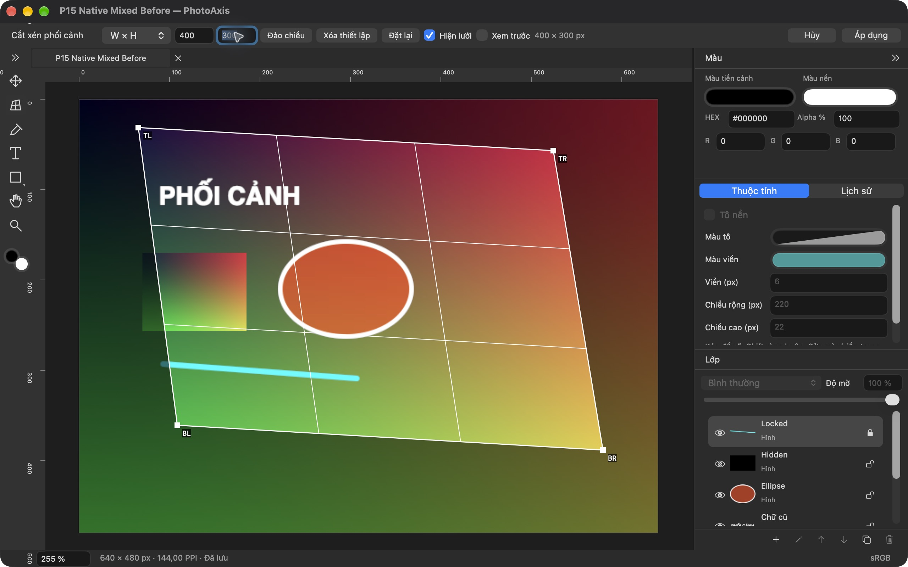
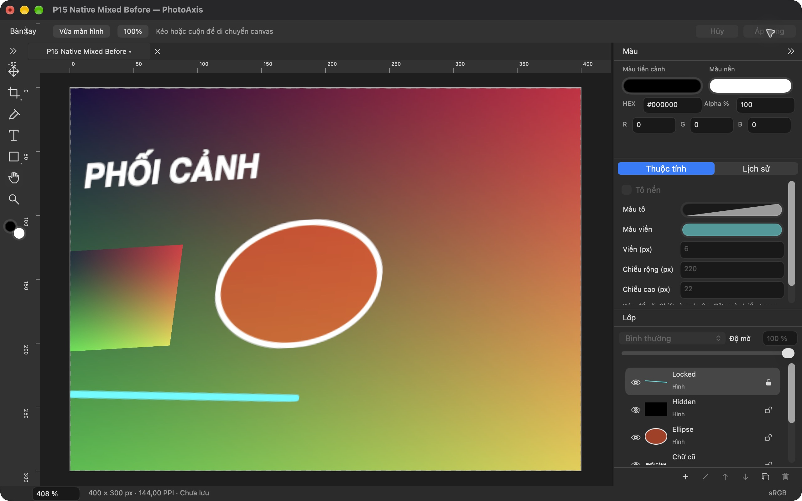
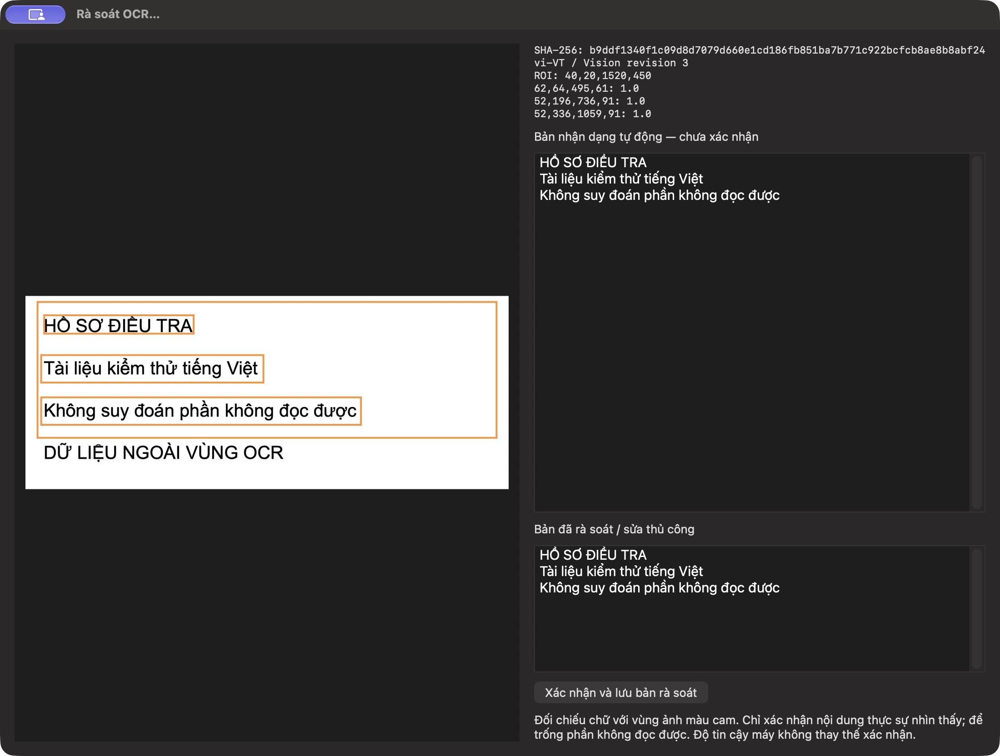
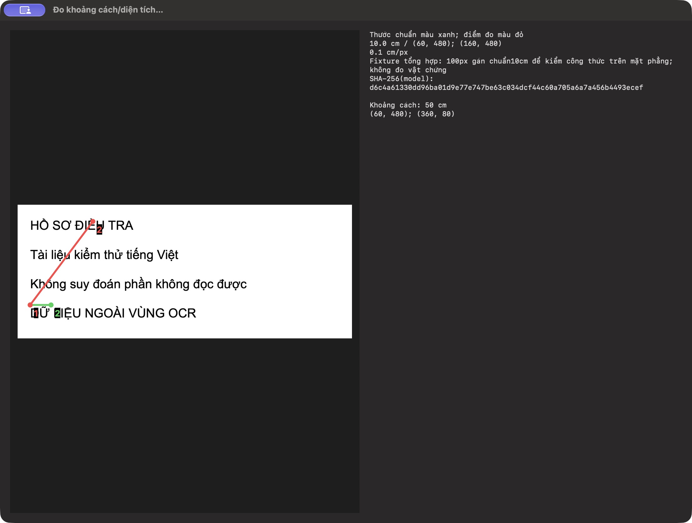
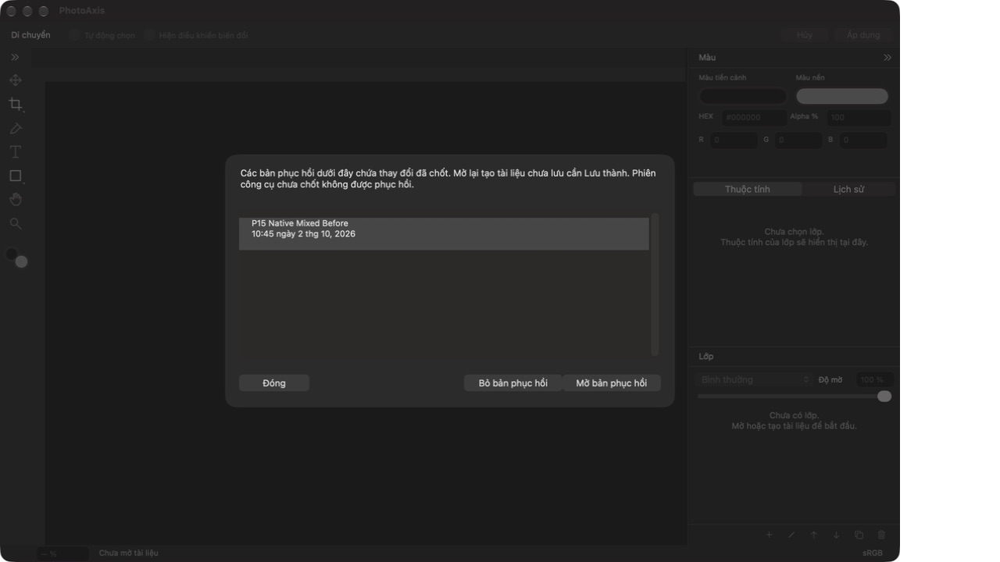
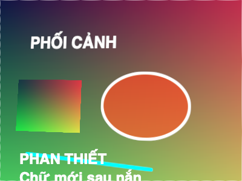

Nắn phối cảnh giữ layer
Ảnh, chữ và hình cùng được nắn theo một phép chiếu. Layer cũ vẫn giữ loại nội dung; chữ mới dùng canvas đã nắn.
Chỉnh ảnh native trên macOS
Trình chỉnh ảnh native trên macOS với layer ảnh, chữ và hình. Nắn phối cảnh toàn tài liệu, lưu dự án để sửa tiếp và xuất PNG hoặc JPEG.
Mã nguồn đã có giấy phép GPLv3. Bạn có thể tự build bằng Xcode hoặc chờ bộ cài đã ký sau nghiệm thu.
.paxis · PNG · JPEG
Layer chỉnh sửa được · offline
Đây là preview bản phát triển. Đã kiểm tra native Perspective Crop, Save/Open, Export và recovery; nghiệm thu đầy đủ, bộ gõ tiếng Việt và máy đích còn đang kiểm chứng.
Ảnh, chữ và hình cùng được nắn theo một phép chiếu. Layer cũ vẫn giữ loại nội dung; chữ mới dùng canvas đã nắn.
Lưu layer cùng nguồn nhúng trong một file .paxis. Xuất kết quả hiển thị thành PNG hoặc JPEG sRGB.
App không có tài khoản, đồng bộ cloud, telemetry hay dịch vụ AI bên ngoài. Dự án nằm ở vị trí bạn chọn lưu.


Ảnh lịch sử từ Release build 1 sau sửa dòng tiến trình. App ký ad-hoc để QA trên máy; ảnh không thay nghiệm thu bộ cài public.
Save .paxis để giữ layer và nguồn nhúng. Export PNG/JPEG khi cần ảnh phẳng để chia sẻ. Recovery lưu các thay đổi đã chốt; hãy Apply phiên công cụ đang làm trước khi dựa vào recovery.
Đọc hướng dẫn sử dụng →Tối đa 8000 px mỗi cạnh, 40 MP canvas/mỗi nguồn, 50 layer, 120 MP nguồn duy nhất mỗi tài liệu và 5 tab. History tối đa 100 bước/128 MiB mỗi tài liệu, không khôi phục sau khi mở lại. Chưa hỗ trợ PSD/RAW, mask hay AI.
PhotoAxis 1.0.0 · build 8
Phân tích và Đầu ra theo tab đang hoạt động. Ảnh thông thường dùng ngay OCR, chú thích, đối chiếu trước/sau, đo có hiệu chuẩn, che vùng và xuất bản chia sẻ. Phiên local dùng bản dựng của canvas đã chốt; lưu thành hồ sơ để giữ kết quả. File gốc được tiếp nhận riêng ở Nguồn. Sửa ảnh yêu cầu hiệu chuẩn và rà soát vùng che lại.
Con trỏ native theo Crop, phối cảnh, Move, Brush, Clone, Eyedropper, chữ, hình và Zoom. Tay nắm chỉ hướng resize/xoay; bàn tay mở hoặc nắm khi kéo. Option đổi Zoom sang dấu trừ, Clone sang lấy mẫu; Space tạm pan.
PhotoAxis 1.0.0 · build 7
Thước ngang và dọc cùng gốc tọa độ canvas, số nằm ngang dễ đọc và giữ trọn trong vùng thước. Chọn px, mm, cm hoặc inch trong Cài đặt; đơn vị in theo PPI của tài liệu. Cài đặt có bốn nhóm Chung, Workspace, Canvas và Cọ mặc định, lưu chiều rộng bảng, thước, nền vùng làm việc, ô trong suốt và thông số cọ cho tài liệu mở mới.
Bảng bên phải luôn hiện bốn nút Chỉnh sửa, Nguồn, Phân tích và Đầu ra. Khi cần giữ file gốc tiếp nhận, vào Nguồn để tạo hoặc mở hồ sơ, tiếp nhận ảnh và chọn bản làm việc; Chỉnh sửa dùng các công cụ canvas thông thường. Phân tích có chú thích, OCR, khung video, đo có hiệu chuẩn và đối chiếu. Đầu ra có rà soát và bản chia sẻ riêng. Đo vật trong ảnh cần hiệu chuẩn; đơn vị thước in chưa phải chuẩn đo vật.
PhotoAxis 1.0.0 · build 6
Tham số Scan tự cập nhật kết quả trước/sau. Crop và Perspective Crop hiện ô kết quả trực tiếp khi chỉnh góc. Kích thước ảnh/canvas tự xem trước khi nhập; thanh chỉnh sáng/màu đã xem trước liên tục. Brush (B) vẽ trên layer nét vẽ editable, có cỡ, độ cứng, độ đậm và màu tiền cảnh; Clone Stamp (S) lấy mẫu ảnh tổng hợp bằng Option-click và giữ mẫu cố định. Hỗ trợ giữ độ lệch hoặc lấy lại điểm mẫu mỗi nét. Thả chuột chốt một Undo; Escape hủy nét đang kéo. Project có nét vẽ dùng schema4 và nhúng mẫu clone, nguồn gốc giữ nguyên.
PhotoAxis 1.0.0 · build 5
Nguồn, Phân tích và Đầu ra nằm bên cạnh Chỉnh sửa trên sidebar native. Tiếp nhận hồ sơ, chú thích, OCR tiếng Việt, khung video, đo có hiệu chuẩn và xuất đã rà soát dùng chung phần mềm. So sánh và đối chiếu nguồn hiện trên canvas; chọn vùng và điểm trực tiếp trên ảnh rồi Áp dụng hoặc Hủy. Không có menu hay cửa sổ Điều tra riêng.
PhotoAxis 1.0.0 · build 4
Phát hiện góc trang và hướng dòng chữ; làm trắng giấy, giảm bóng/nhiễu và đen trắng thích nghi. Nắn cong hai trục thủ công, chuẩn hóa A4/Letter/kích thước riêng. Xử lý tối đa50ảnh thành PNG, project editable, PDF và manifest hash theo thứ tự. Cần rà từng trang; ảnh giấy/sách chụp thực và full quota còn nghiệm thu.
PhotoAxis 1.0.0 · build 3
Giữ file tiếp nhận cùng SHA-256 riêng với bản làm việc. Xem metadata, chú thích, so sánh và xuất bản PNG/PDF A4 đã rà soát.
Nhận chữ trong vùng nguồn ngay trên máy, giữ bản xác nhận riêng; trích khung video kèm hash nguồn, số khung và mốc thời gian.
Đo khoảng cách và diện tích với thước chuẩn, điểm đo và giả định hình học được lưu. Kết quả cần ảnh và hiệu chuẩn phù hợp.


Hash kiểm toàn vẹn, không chứng nhận nguồn gốc, tính xác thực hay thời gian chụp. OCR, khung giải mã và số đo cần người rà soát cùng dữ liệu nguồn phù hợp.

